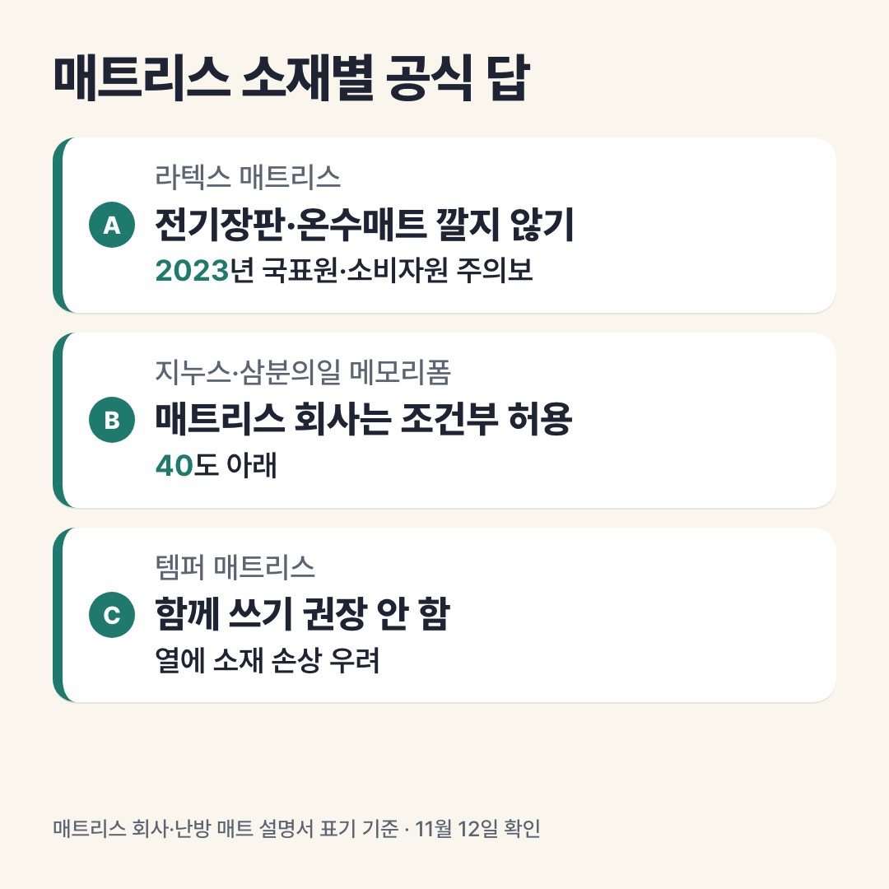
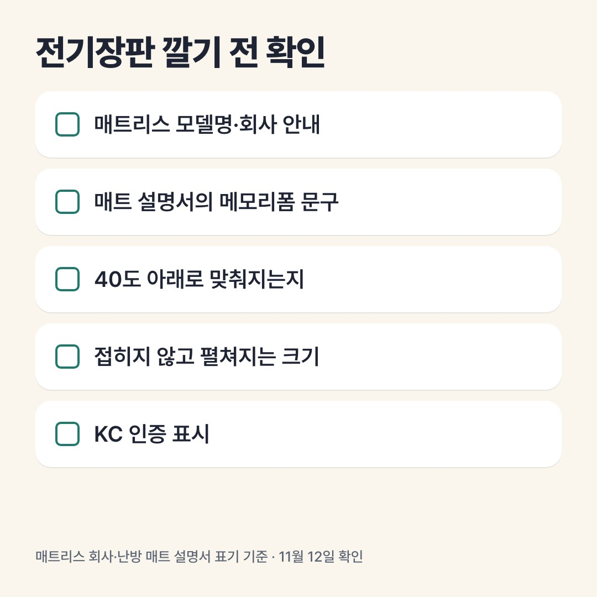

이 게시물은 쿠팡 파트너스 활동의 일환으로, 이에 따른 일정액의 수수료를 제공받습니다.
메모리폼 전기장판 써도 될까? 지누스는 40도 미만 조건부, 나비엔은 금지
라텍스 매트리스 위에는 국표원·소비자원 안내대로 전기장판을 깔지 않는 게 답이에요. 메모리폼은 매트리스 회사마다 답이 갈리고, 허용하는 회사도 '40도 아래'라는 조건을 붙였어요.
그런데 난방 매트 쪽 설명서는 메모리폼 위 사용을 막아 둔 곳이 있어요. 그래서 매트리스 설명서와 난방 매트 설명서, 두 장을 같이 봐야 해요.

메모리폼 침대를 들인 첫겨울, 전기장판을 사 놓고 깔기 직전에 손이 멈춘 집이라면요. 매트리스 회사 다섯 곳과 난방 매트 안내 세 개(설명서 2개·판매 페이지 1개)를 나란히 놓고 정리했어요.

라텍스 매트리스 위 전기장판, 왜 안 되나요?
국가기술표준원과 한국소비자원은 2023년 11월 전기매트류 화재 안전주의보를 냈어요. 화재가 잦은 이유로 맨 먼저 든 게 고열에 약한 라텍스 매트리스 위에 전기매트를 놓고 쓰는 경우예요.
같은 보도자료는 전기매트를 장기간 접어 보관해 열선이 상하는 경우도 함께 꼽았어요. 소방청 국가화재정보 기준 전기매트류 화재는 2022년 한 해 242건이었어요.
메모리폼 전기장판 사용 가능? 브랜드마다 달라요
매트리스 회사 공식 안내를 열어 보니 답이 셋으로 갈렸어요.
- 지누스: 40℃ 미만, 4시간 이내 사용을 권장해요. 노랗게 변하는 게 걱정이면 사이에 담요를 깔라고 적었어요.
- 삼분의일: B타입은 라텍스가 아니라서 40도 이하 전기장판·온수매트를 쓸 수 있고, 30도 이하를 권한다고 적었어요.
- 템퍼: 템퍼 매트리스와 전기장판을 같이 쓰는 걸 권장하지 않아요. 직접적인 열에 오래 닿으면 소재가 손상될 수 있다는 이유예요.
- 시몬스·에이스: 공식 FAQ에서 전기장판 안내를 찾지 못했어요. 쓰는 매트리스 모델명으로 고객센터에 물어보는 게 확실해요.
템퍼 매트리스 위에 온수매트는요?
템퍼 공식 FAQ의 답은 '전기장판' 기준이고, 온수매트를 따로 적은 문장은 없었어요. 주의사항 페이지는 전기담요를 원칙적으로 쓰지 않는 게 좋다고 하고, 꼭 쓰려면 소재에 바로 닿지 않게 시트를 한 장 사이에 두라고 적었어요.
열이 소재의 온도 반응을 잠시 떨어뜨릴 수 있다는 게 템퍼가 든 이유예요. 온수매트도 열을 내는 제품이라, 템퍼라면 사기 전에 고객센터 답을 먼저 받아 두는 게 순서예요.
매트리스는 된다는데 난방 매트 설명서는 금지라면?
이번에 본 난방 매트 안내 세 개(설명서 2개·판매 페이지 1개)는 모두 메모리폼과 함께 쓰지 말라고 적었어요.
- 나비엔 숙면매트 온수(EMW723 등): 라텍스·메모리폼·유아매트·스펀지매트와 같이 쓰면 변형·변색·과열 우려가 있다고 적었어요.
- 귀뚜라미 카본매트 온돌(KDM-871N 등): 라텍스·메모리폼·레자·스펀지류·모션베드와 절대 같이 쓰지 말라고 적었어요.
- 파크론 워셔블 온수매트: 판매 페이지 주의 문구에 메모리폼이나 라텍스 위에서 쓰지 말라고 적혀 있어요.
나비엔과 귀뚜라미는 둘 다 침대에서 쓰는 걸 전제로 한 제품이라 더 헷갈려요. '침대용'이 '메모리폼 위 괜찮음'이라는 뜻은 아니었어요.
그래도 쓴다면 온도는 몇 도로 맞추나요?
매트리스 쪽 기준은 지누스 40℃ 미만, 삼분의일 40도 이하(30도 이하 권장)예요. 나비엔 숙면매트 온수 설명서는 잠잘 때 쿠션 매트 35℃, 슬림 매트 33℃ 이하로 설정하라고 적었어요.
저온화상도 함께 경고해요. 나비엔 카본매트(EME510/520) 설명서는 취침처럼 오래 쓸 때 33.0℃ 이하로 맞추고, 어르신·어린이·열을 잘 못 느끼는 사람은 혼자 쓰지 않게 하라고 적었어요.
다만 난방 매트 설명서가 메모리폼 사용을 막아 둔 제품이라면, 온도를 낮춰도 그 문구가 사라지진 않아요. 매트 쪽 고객센터 답까지 받은 다음에 까는 게 순서예요.

매트리스 회사 안내는 11월 12일 지누스·삼분의일·템퍼·시몬스·에이스침대 공식 사이트에서, 난방 매트 문구는 나비엔 하우스·귀뚜라미 공식 설명서와 코스트코 판매 페이지에서 옮겼어요. 직접 써 본 후기는 아니에요.
지누스 베이직 메모리폼 매트리스의 쿠팡 판매가는 11월 12일 확인 기준 130,220원부터(크기·두께 옵션마다 다름), 상품평은 4,759개였어요. 가격은 바뀔 수 있어요.
지누스는 메모리폼 위 난방 매트를 40℃ 미만, 4시간 이내로 쓰라고 적었어요.
지누스 베이직 메모리폼 매트리스 130,220원부터(11월 12일 쿠팡 확인, 옵션마다 다름) 크기별 — 가격·구매처 보기
#메모리폼전기장판 #라텍스전기장판 #템퍼전기장판 #온수매트 #전기장판화재